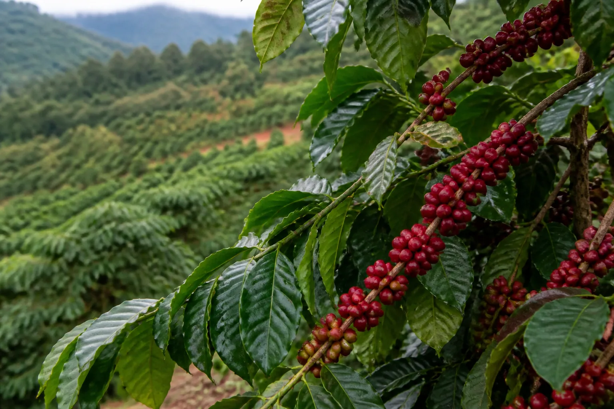

⌇ Hồ sơ cây trồng · Cà phê
Theo dõi vườn cà phê theo mùa vụ
Quan sát tán lá, quả và điều kiện vườn thường xuyên; kết hợp vệ sinh, thu hoạch và chăm sóc cân đối để giảm áp lực sâu bệnh.

Nội dung cần theo dõi
Kiểm tra nhiều vị trí trong vườn, đặc biệt sau các đợt thời tiết thay đổi.
Bệnh hại
Nhận biết bệnh gỉ sắt
→Sâu hại
Theo dõi mọt đục quả
→
Cỏ dại
Quản lý cỏ tranh trong vườn
→Công cụ
Tra cứu theo cây cà phê
→Lưu ý: Nội dung tập trung vào nhận diện và quản lý tổng hợp. Mức độ gây hại và biện pháp phù hợp phụ thuộc giống, tiểu khí hậu và điều kiện vườn tại địa phương.